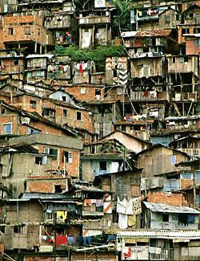
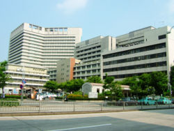
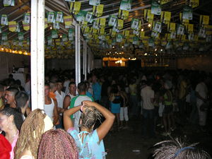
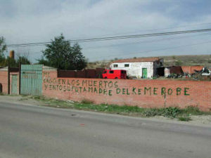
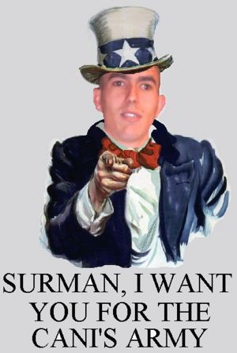
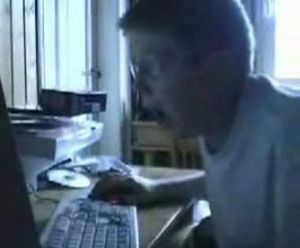

Imperium online
 De: La Frikipedia, la enciclopedia extremadamente seria.
De: La Frikipedia, la enciclopedia extremadamente seria.
De la serie Videojuegos:
Imperium online

General Rumano de vacaciones en Egipto (vease las piramides)
| Desarrollado por:
|
Joermimont Games
|
| Distribuido por:
|
XXX Games
|
| Diseñado por:
|
El primo italiano del Niño loco alemán
|
| Motor
|
El de la epoca rumana
|
| Género(s)
|
Construir ciudades,cachulizarlas,y destruir las otras
|
| Fecha de lanzamiento:
|
Cuando aparecieron sus primeros garrotas
|
| Modos de juego:
|
{{{modo_de_juego}}}
|
| Requisitos:
|
Tener un diccionario para entender insultos en italiano
|
| Disponible en:
|
{{{disponible_en}}}
|
| Formatos:
|
CD, DVD,y proximamente blurai
|
| Edades:
|
la suficiente para putear
|
| Puntuaciones:
|
aun sin ellas
|
{{{notas}}}
Videojuego desarrollado y proveniente de Italia (la mayoria de la poblacion garrotera de este juego viene de ahi),basado en el Imperio Rumano.Este juego va de construir una ciudad rumana,pero con la posibilidad de putear a los otros jugadores por el interné,por lo que insultos palabras bonitas,amenazas,y vacileos abundan en el chat.Ahora tú te preguntas:de verdad,¿de que va todo esto?
En que consiste esto
Hay que construir una ciudad,con sus habitantes,y darles de comer,hacer que se entretengan,y que puedan rezar a sus dioses (sí,te obligan a hacer iglesias para que se vayan de misa).Pero no somos Dios (¿o sí?),y necesitamos materiales,comida,y chorradas para que puedan hacer todas sus necesidades
Habitantes
 Típica barriada gitana en una ciudad Rumana
Si,son esos quejicas que quieren vivir en el cielo,o te quemarán el puticlub,tu casa,y tu perro.Hay 3 tipos:
- Gitanos: o Plebeyos,son la clase social más baja,y viven en las chabolas.Se contentan con que les des de comer,o seran delincuentes.Si son bien alimentados,producen porros que son consumidos por los tipos normales
- Tipos normales: en el juego se llaman Equites.Son personas que mantienen la decencia.Su presencia te da reclutas para mandarlos a las guerrillas locales que hay.Consumen los porros gitanos,y además de comida,necesitan entretenimiento,ya sea en un puticlub o una arena Cani.
- Pijos:En el juego llamados Patricios
estrella Son los más ricos,su presencia te permite cachulizar más.Estos,aparte de comida,espectaculos,e iglesias,necesitan ropa de marca,proveniente de una tienda de marca,ya que la ropa de mercadillo no les sienta bien.Tambien necesitan haceite,su droga particular
Materiales
De construccion
Segun la calidad del edificio,hay distintos materiales
- Madera:se recolecta por ahí,la obtienes si pones un almacen de madera.Tus gitanos o esclavos la recolectarán.La madera se necesita más en edificios chaboleros,aunque tambien en estructuras grandes
- Carton:estos necesitaras crearlos en un taller de carton
- Piedra:no te esperes que sirva para tirarsela a otras ciudades.Sirve para construir edificios y casas normales,y se obtiene en minas de piedra
- Mármol:o "piedra pija",se usa para los edificios más caros e importantes.También la puedes vender caro en un puesto de comercio
Alimentos

Mal ejemplo de gobernador
Los necesita la gente para comer,o como ya te dije,quemaran tu casa,tu perro,y el puticlub.Son:
- Trigo:Producidos en plantaciones (de trigo,malpensao),se pueden convertir en harina,con el molino
- Harina:El trigo se convierte en esto si tienes un molino,y si alguien trabaja en él.Se puede convertir en barras de pan
- Barras de pan:se crean en las panaderias,y se usan tanto en estas como en algunos bares
- Carne:en las granjas porcinas la obtienes,si algun gitano trabaja en ellas matando cerdos
- Sarshishones:En el juego llamados "embutidos".Como las barras de pan,se producen en carnicerias,y se consumen en bares
- Vino:lamentablemente,no hay cerveza,pero si vinos,y baratos.Se producen en viñedos,y se consumen en los bares de copas
Mercancias

Otro mal ejemplo de gobernador
El contrabando es importante para ganar dinero,aunque algunas mercancias las necesitan algunos edificios,y son estos:
- Haceite:el haceite sirve tan solo para el uso de los pijos,y para comerciar,debido a sus propiedades alucinógenas.Se produce en holivares
- Tela:la tela sirve para hacer ropa de marca,que necesitan de nuevo los patricios.Se producen en plantaciones (de lino)
- Ropa de marca:se compran en una tienda de marca.Los patricios la compraran,porque se niegan a llevar ropa de mercadillo,que las llevan los gitanos y normales
- Porros:especialidad gitana del Imperio Rumano.Estos las hacen si son alimentados a base de sarshishones y barras de pan.Los consumen los tipos normales,y se venden medio-caro en contrabandos
- Esclavos:Canis,sin IQ existente.Son tratados como mercancia,y pueden servir para trabajar los peores oficios (recolector de madera,recolector de piedras,granjero,gladiador cani).No son considerados clase social pese a ser personas.
Otros
Este ejemplo de gobernador puede triunfar en la sociedad cani,y evitar invasiones pijas
- Leuros:el dinero es importante,porque sin el no vas a hacer ni un vertedero.Se consigue por varios metodos,solo reservados a los garrotas que se internen en este juego
- Conocimiento:si,aqui tambien se necesita.Los mejores edificios necesitan ser pensados primero,o si no,seran un truño.En los colegios publicos,bibliotecas,y universidades obtendrás educacion
Popularidad
Si,aqui tambien existe.Sirve para joder a la gente,y perderla (la popularidad).Dificil ganarla,facil perderla.
Para ganarla
Te ofrezco varios métodos:
- Hay edificios que al construirlos te dan popularidad.Son los más pijos y costosos,pero merecen la pena
- Misteriosamente,si construyes edificios de una manera determinada,te dan popularidad.Son algunos como poner chabolas juntas,poner un puticlub cerca de más de 10 casas,etc....
- En las iglesias gitanas,puedes celebrar un banquete que aumentará tu popularidad a costa de leuros
- Ganar batallas te dará popularidad de chulo de provincia,por lo que derrota a toda competencia posible
Para perderla
Es muy facil,haz las cosas en tu beneficio,pero no del pueblo.Estas son tan sencillas como:
- Impuestos,¿como no? A todos nos jode
- La ley de "ajo y agua",que impedira que la gente se queje y se revuelva
- En las iglesias maradonianas,se ofrecen ofrendas en leuros a este.Como son un timo,puedes robarlas,pero te cuesta popuralidad
- Ser un pringao te quita popularidad.Por cada batalla que pierdas,bajara bastante.Eso lo entiende hasta un cani
Construcciones
Las hay muchas,variadas,de colores,malolientes,pijas,chaboleras,y cachuilistas.Os voy a resumir los edificios más importantes
Básicos
Son esas mierdas construcciones que parecen que no hacen nada (y en realidad,no lo hacen),pero que son necesarias
- Chabola:la vivienda de los gitanos,en la que se producen porros si estos estan decentemente alimentados
- Casa VPO(vivienda de proteccion oficial):aqui viven los tipos normales (o equites) del Imperio Rumano.Te dan reclutas para mandarlos a la guerrilla
- Chalet:aqui viven los pijos.Necesita haceite y ropa de marca,y te produce puntos de corrupción
- Armacen der payo:el armacen der payo es la base de toda colonia,puesto que se puede construir en cualquier sitio,pero necesita una escuadra que este cerca (porque saldrán canis a desguazar el armacén).Las partidas principales del online son las de destruir estos armacenes,por lo que protegelos
- Hacueducto:el hacueducto transporta hagua,necesaria para fuentes y talleres de carton (no me preguntes por que)
- Fuentes:contienen hagua con la que se lavan los ciudadanos,y mejora la salud de estos,pero no sirve si te asaltan las plagas de mosquitos
Los que te dan recursos
Sin estos,los edificios van a ser tan solo imaginarios.Crea estos,y pon a gitanos a trabajar,y ya podras construir
- Almacen de madera:pues eso,almacena madera.Si lo pones cerca de unas ruinas (abundantes en madera),te populizarán (por aprovechao)
- Taller de carton:crea carton,y necesita hagua.Si lo pones cerca de un rio o una costa de hagua,te populiza (por no tener que poner tanto hacueducto)
- Minas,canteras,y demás:las hay de 4 tipos:piedra,mármol,hierro,y oro.No te popularizan,ni nada
- Plantacion de tela:produce la tela de la ropa de marca,funciona mejor con hacueductos

tienda pija en un mal sitio,probablemente al lado de una discoteca
- Tienda de marca:crea la ropa de marca que necesitan los pijos,y tambien para comerciarla con los mercadillos
- Curtiduria:Crea cuero,y necesita carne.El cuero no se necesita para nada más que para comerciarlo con los talibanes,si nos hacemos amigos de ellos
Alimenticios
Oye,todos necesitamos comer,y la poblacion tambien.Aqui hay muchos edificios que te pueden ayudar a que coman
- Plantacion de trigo:el gitano que trabaje en ella te dará trigo,que lo necesitas convertir en harina.Funciona mejor con hacueductos
- Granja porcina:produce carne si un gitano mata cerdos dentro de ella (el gitano habra aprendido a trabajar).Misteriosamente,funciona mejor si esta cerca de una plantacion de trigo (porque el gitano mangoneara un poco de este)
- Shiringuito:el shiringuito vende pescaito frito,con el que puedes alimentar a tu poblacion.
- Molino (NO el de Don Quijote,por Diox):Convierte el trigo en harina,que se usa en panaderias y algunos bares.Necesita hagua para furular
- Carniceria:convierte la carne en sarshishones,alimento habitual en la dieta de tus ciudadanos.Si lo pones frente a una acera,funciona mejor
- Panaderia:el gitano que trabaje en ella usara la harina para hacer barras de pan,que satisface el hambre de tus pueblerinos.Ponerlo cerca de una acera te hace popular
Carrefour en un barrio HOYGAN
- Carrefoul:vende sarshishones y barras de pan,aunque es peor
- Silo der payo:es un granero en el que guardas comida.Si la gente tiene hambre y se queja,asaltara el silo,y les dará alimento
Negocios y bares
Aqui hay todo tipo de eficios para ganar calderilla,y bares para la comunidad que haya
- Bar:el clásico bar en el que te dan churros,el ambiente y el bingo entretiene a la poblacion de la zona (sobretodo a los gitanos con adiccion a este juego),tambien vende comida
- Bar de copas:bar más pijo,donde se sirve alcohol,y hay peleas nocturnas.Entretiene más que el bar normal
- Taller de marihuana:en él,se convierte el haceite en porros.Esto lo hacen las ciudades más pijas,para no tener que meter a gitanos que hagan porros
- Mercado de esclavos:en él se venden canis,que trabajan en almacenes de madera,talleres de carton,y minas,aunque con lo burros que son,producen poco
- Puertos y astilleros:en el puerto puedes comerciar con otras ciudades del imperio rumano.En el astillero (que requiere haberlo pensado),puedes hacer barcazas,por si vives en una isla,para salir
Edificios publicos

El puticlub,edificio barato y que "alegra" la moral de tus ciudadanos
No te creas que son cuatro mierdas que ponen para los gitanos,que acaban vandalizadas por algun cani que esté pasando.Son estos.
- Colegio publico(bueno,este si lo vandalizan):en él,niños y gitanos aprenden cosas sobre el mundo.Produce conocimiento,con el que podras pensar edificios para crearlos
- Biblioteca publica:aquí vienen a leer los ciudadanos cultos.Produce más conocimiento
- Comisaria-parque de bomberos:este edificio puede apagar fuegos,y encargarse de las revueltas gitanas o canis que hay (con un par de leches,claro).Ponerlo aumenta la dignidad y la popularidad de tu ciudad
- Farmacia:da medicamentos a los ciudadanos enfermos que haya.Funciona mejor cerca de una fuente,en la que se lavan los gitanos
 Reconocido hospital Rumano de pocos años a.H (antes de House)
- Hopital:el hopital (sin la s,sí) puede curar a toda la poblacion local,y tambien cura a tus escuadras por si son heridos en la guerrilla.Requiere ser pensado,y solo los pijos pueden trabajar aqui
- Puticlub:¡Hombreee!Es una estructura obligatoria para toda ciudad.Produce entretenimiento,y cuantos más haya,habra competencia,que es igual a descuentos,que es igual a más clientes,que es igual a más entretenimiento.
- Arena de canis:en este edificio,se practica la lucha cani,un enfrentamiento fisico y verbal.Entretiene más de lo que aparenta,y puedes reclutar canis y canis bizcos para la guerrilla
 Discoteca casera montada por alguna feria gitana
- Discoteca:En este edificio,vienen tribus urbanas de toda tu ciudad,para intentar pillar.El entretenimiento,las peleas nocturnas,
y las manchas de lefa en el follodromo estan aseguradas
- Hacienda:primer edificio cachulista que construirás.Aqui,segun lo que has timado a la gente con los edificios (si,los bares,los puticlubs,y las iglesias son corruptas),cobras.Si la gente compra(y pica) más,tu recibes más
- Mercadillo:estructura principal de tu ciudad,en él se muestran tus progresos.Sin el no puedes hacer una mierda
Iglesias

Boceto de iglesia (gitana,al parecer por el exceso de gente en ella)
Tus ciudadanos tambien necesitan su misa semanal,o si no,se quejan,y llaman a una bruja para que te ponga dos velas negras.Las iglesias son:
- Iglesia cristiana:en ella,los gitanos veneran a la virgen.Producen un poco de dinero,y tambien los pijos pueden trabajar aqui.Si lo hacen,la cantidad de leuros que recibes aumenta.Si pones tres de estos,tambien recibes más dinero
- Iglesia maradoniana:en ella,algunos frikis veneran a este tipo.La iglesia recibe ofrendas,que puedes birlar,pero pierdes popularidad.
- Mezquita:si,aqui rezan los islamistas.Otorga dinero,y si pones tres,tus tropas aprenderán algunas tacticas de guerra de Saddam Hussein
- Sinagoga:Edificio religioso pijo.Solo pueden trabajar pijos en él,y produce leuros y conocimiento.Requiere ser pensado para que funcione
Construcciones para fardar
Pues eso,son caros,grandes,y solo puedes construir uno por ciudad.Con ellos,puedes fardar de tenerlos.Son 7

El ayuntamiento solo funciona con expertos en ganar dinero como éste
- Ayuntamiento corrupto:tener este edificio indica que has cachulizado tu ciudad.Puedes realizar los golpes de corrupcion más caros
- Arco del palizon:si has palizeado a tus enemigos,podras construirlo.Sube un nivel de experiencia a tus tropas(frikis de pokemon,no confundir con el caramelo raro)
- Universidad:en ella,vienen juerguistas de todo el Imperio a emborracharse,por lo que el que trabaje aqui,aprenderá mucho
- Juzgado:el juzgado hace que disminuya la delincuencia,pero no evita alguna manifestacion violenta
- Catedral:la catedral es un edificio raro.Si la mayoria de los ciudadanos estan contentos porque hay suficiente misa,la catedral se hara famosa,vendran muchos guiris,y ganarás muchos leuros
- Casino:El casino es lo que más produce ludopatia y entretenimiento de tu ciudad.Todas las casas cercanas se volverán adictos a esta construccion.El unico problema es que esta corrupto por dentro,y los beneficios no te los llevas,por lo que tendras que joderte
Celebracion de un gol en el estadio (y los canis babeando con la cerveza)
- Estadio de furbo:lo que hace es simple.En él,se juegan partidos,se crean apuestas,se forman peñas de equipos en los bares,y como no,hay conflictos en las gradas,como bengalazos,peleas,un tio en pelotas que se tira al campo,cabezazos a lo Zidane,y más cosas.Si te has leido este tocho,has sido tonto,porque lo que hace el estadio es subir el nivel de entretenimiento de toda la ciudad,por muy lejos que este
Militares
 Las barricadas son lo que ponen los n00bs desesperados si les atacas,y algunos mariconas
Aqui se crean edificios que forman tropas para la guerrilla.Más te vale saber de esto si quieres sobrevivir en el online
- Cuartel:en él creas las tropas básicas:los navajeros,los apedreadores,y los cabreros
- escuela militar:aqui puedes crear policias corruptos y los patriarcas
- Arsenal:aqui se recogen armas para que las usen los apedreadores.Sin ella,no puedes crearlos
- Corral:aqui se crian cabras,para su uso posterior.Sin ella,no se pueden crear cabreros
- Desguace:puede restaurar edificios,y da materiales para hacer fragonetas y barcazas
- Taller der payo:en este taller puedes hacer fragonetas,que hacen mucho daño por su capacidad de atropello
- Barricadas y atalayas:usalas para proteger a tu ciudad,y defenderla con tirapiedras
- Campamento:puede curar a tus tropas,reemplazando a los muertos
Guerrilla,y conquistas
Pues sí,aunque no lo parezca,el Imperio Rumano está en batallas constantes,y en el online,la guerrilla es casi lo unico que se juega.Asi que si quieres convertirte en un friki que quiera sobrevivir,aprendete todo esto:
Unidades militares
Hay varios tipos,desde los más flojos hasta los más fuertes.
Regulares
Se crean en el cuartel,y no requieren tener que desbloquearlos con conocimiento.
- Navajeros:unidad más simple,el 100% de las tropas de los jugadores novatos son navajeros.Son muy debiles,pero a niveles altos pueden ser peligrosos si van en conjunto.Lo que les salva es su habilidad especial,el "lanzamiento de palo a lo Edgar",pero con punteria
- Apedreadores:tiran piedras,botellas rotas,y cualquier cosa que haya en el suelo.Hacen un daño normal,pero se defienden peor que tu con un escudito de plastico de juguete de un todoatrescientas.Son especialistas en cargarse edificios,y su habilidad especial es el "coctel Molotov",
- Cabreros:Pastores gitanos montados en cabras.Son un poco más rapidos que las tropas de a pie,pero no te esperes mucho.Su ataque es fuerte,pero son menos que las tropas de infanteria,y pueden caer rapido.En conjunto son muy peligrosos.Su habilidad especial les permite ir más rapido
Canis
 Promoción de reclutamiento cani
Se reclutan en su arena.
- Canis normales:los de siempre,se reclutan en sus arenas.Pegan muy fuerte,pero no tienen defensa,y una hostia bien dada los mata.Cuidado con su habilidad de sobredosis de reggaeton,que los vuelve inmunes a todo,pero que mueren a los 30 segundos
- Canis bizcos:el exceso de Haze y de porros nos proporciona esta unidad,considerada "elite".Más peligrosos,y con más defensa.Su habilidad es potenciar sus habilidades con esteroides
Élites
Los reclutas en la escuela militar.Son más caros,y más fuertes
- Policias corruptos:son muy defensivos y con mucha vida.Llevan escudos antitodo,y su habilidad de taparse los hace inmunes a ataques a distancia,pero los hace lentos.Son mejores que los navajeros,a niveles bajos,pero los navajeros pegan más a mayor nivel
- Patriarcas:necesitas tecnologia para poder hacerlos.Su habilidad de liderazgo potencia las otras tropas,y además,estos son los más fuertes.Cuidado porque llevan espejos que te reflejan tus ataques,y te mueres de lo feo que eres.Tambien pueden hacer su grito cani,que es peligroso porque asusta a cualquiera
Máquinas

Furgoneta de asalto gitana,hecha especialmente para conducir borrasho
- Fragonetas:Su capacidad de atropello puede arrasar con los enemigos.Son caras,es lo unico.Se crean en talleres der payo
- Barcazas:Solo disponibles en el agua.Pueden apedrear a edificios,tropas,y otras barcazas.Hacen mucha pupa,pero son fragiles,y algo caras.Pueden llevar tropas dentro.Se crean en astilleros
Los enemigos
En el juego normal,son los poblados canis.Si te acercas con tus tropas,salen las suyas.El poblado parece una mierda,pero es más peligroso de lo que parece.Las tropas,no tanto
En el juego online,ya es otra cosa (jugadores),pero los explicaré en ese apartado
Online
Unica parte que podria entretener de este juego.Para ello,hazte una cuenta (es gratis),y un personaje,con su nombre,y de la familia a la que pertenece.Entonces,entraras en el online.Explicamos
Personaje
Si,tienes que hacertelo,e importa.El personaje puede ser de una familia concreta.Hay 5:
- Leonidos:estos son la familia tipo "esparta" de Roma.Todas sus mejoras son de combate,pero son dificiles de controlar.Todos se hacen uno de esta familia.Curiosamente,todos se llaman Leonidas (los jugadores)
- Cachulios:los mafiosos de Roma.Pillan mucho dinero,y comercian y contrabandan de todo.Destacan por su habilidad de sobornar a tu ejercito para que se rinda si esta desmoralizado.El mejor jugador de este juego (es el 3o,porque los 2 primeros son compinchados)es de esta familia
- Canieros:Pueden pillar muchos materiales,y cuentan con mejoras de granjas y minas.Cuidado porque pueden hace 3 escuadras voluntarias,por lo que son dificiles de repeler.2 del top 12 pertenecen a esta familia
- Einsteinios:de esta familia no se sabe mucho,porque son empollones de sangre.Al ser los mas debiles,se te concede un pretoriano como escuadra de voluntarios
- Porrilleros:estos son queridos por los plebeyos gitanetes,porque esta familia legaliza sus porros.No destacan en nada en especial
Luego llega la eleccion de habilidades,en las que estan ciudad,estrategia,y familia.Para el online,estas dos ultimas ponte.Ya por ultimo,existen propiedades en venta,que consigues si ganas partidas o juegas la campaña.Elige la que te salga del culo prefieras
Partidas

Yamcha contento al saber que se ahorró X leuros al no comprar este truño
Hay 6 tipos de partida para ganar,de los cuales 1 o 2 son los que se juegan normalmente:
- Ley
de la mas larga del mas fuerte:modo principal de juego,consiste en destruir el fundus enemigo,y proteger el tuyo.Quien se cargue todos los del enemigo gana.Puede producir piques largos,de más de media hora,y puede divertir o ser un tocho.Es practicamente el unico modo que se juega
- El ultimo barbaro:hay que cargarse a todos los poblados barbaros que haya.El que se cargue el ultimo es el que gana la partida.Es muy simple,y se juega algo
- 40000 denarios:tienes que pillar eso,40000 denarios.No se juega nada,porque se basa solo en comerciar y estafar
- Rey de la colina:hay que conquistar un lugar,y mantenerlo.Tampoco se juega a este.La "colina" es esa mancha de lefa morada que hay en el mapa
- Ciudad monumental:hay que construir todos los monumentos.El mismo objetivo de la partida te sugiere tocho,y no se juega nada
- Desafio total:mezcla todos,asi que puedes tirar por matar barbaros,a tu enemigo,comerciar,o construir.Tampoco es que se juege mucho
Ahora están las salas de juego.Hay 2,cada una con sus caracteristicas:
- Partidas amistosas:sala de juego de los n00bs,y de las partidas de 4 jugadores.Aqui no te permiten usar habilidades de nivel,y propiedades.Si eres n00b,lucha aqui.Puedes crear tu partida,y ajustarla
- Partidas puntuadas:Hardcore,ranked,lo que sea.Asi es esta sala.No puedes crear partidas,puedes buscar oponentes solo.Ni se te ocurra meterte si no vienes con un personaje de nivel 25,o se te comen vivo los pr0.Aqui no cuenta la habilidad,sino las victorias / derrotas,por lo que aqui gana el que juega más,y el que se zampa más n00bs
Tipos de jugadores
Se diferencian por nacionalidad,y como juegan:
Por nacionalidad
Hay solo dos nacionalidades que se vician a esto:nosotros y los italianos
- Espiñoles:si,somos nosotros.No tenemos termino medio,por lo que somos o los más engarrotaos,o comida de pr0s.Somos discretitos,pero abunda algun subnormal.Son los que más juegan al 2vs2 amistoso
- Italianos:Los del pais de la bota.Estos son más de estar en la lista media,aunque hay algun top.El problema es que,si juegas de dia,habrá dos o mas italianos borrachos en el chat,y si juegas de noche,tambien habra 2.Tambien les mola el 2vs2 amistoso,y les flipa Pompeya.Por cierto,los compinches de jugadores los hacen solo los italianos
Por habilidad

Jugador de Imperium online en sus ratos libres

Bill Gates y su ejercito en este juego.Si sobrevives,te tira un pantallazo azul
¡Hombreeee! Hay de todo,y cada uno pierde la dignidad por momentos
- Tontolabas:awebaos,hippies,novatos,o simplemente,n00bs.Son muy lentos,tontos,y no hacen tropas.Con 2 escuadras puedes derrotarlos sin problema.Para detectar a uno de estos,basta con ver como avanza,como no te hace ninguna tropa (o tardara medio siglo),y hace torres (no hace murallas,porque cree que las torres tirando flechas derrotan a tu ejercito,pobres imbeciles)si ve como acercas tus tropas a su ciudad.Son la comida principal de un pr0,y su habitat es la sala de juego amistoso,aunque a veces aparece uno en el puntuado,alegrandole el dia al que busque una victoria.Si tienes minima idea del juego,date por vencedor,si tienes 2 escuadras
- Normales:no hace falta explicarlos.Avance normal,tropas normales (haran de 1 a 3 escuadras,si les dejas tiempo,5),y no mucha habilidad de combate.Se detectan por eso.Si sabes derrotarle o hacerle una jugarreta,te sera facil ganar.Aparecen con más frecuencia en el puntuado
- Maricones:Parecidos a los jugadores normales,pero peores en combate,y solo tienen jinetes como tropa.La jugarreta que te hacen es que cuando estan luchando contra ti,usaran su carga,e iran a por tu fundus.Si sabes jugar suficiente,sabrás que con la extincion de incendios,te los cargas.Lo bueno es que al rechazarlos,se rajan,y es victoria para ti.Intentan escalar puestos en el puntuado
- Semipr0:Eslabon
perdido inferior de los pr0.Pueden hacerte 3 tropas en 3 minutos,asi que andate con ojo.Su avance es rapido,pronto veras academias militares en su ciudad.Si les dejas tiempo,pueden ser tu perdicion.Para vencerlos,necesitas estar a su nivel,y hacerle una jugarreta o vencerle.No hace falta decir que juegan en el puntuado para obtener su certificado de pr0
- Pr0:Depredador primario de la sala de juegos puntuada.Muy fuertes,muy rapidos,sin vida social,peligrosos en el juego,no en la calle.Son capaces de encasquillarte 6 tropas en 3 minutos,y si te defiendes,te ponen un fundus delante de tu base,y un cuartel para putear.Para vencer a un pr0,tienes que ser un pr0.Ah,para ser un pr0 tienes que ser top15
- Pr0 enviciado,o TOP12:si quieres ser el mejor garrota,no solo necesitas ganar:necesitas tiempo de juego.Los enviciados son el top12,los que más se han enganchado,y salen en la clasificacion.Son pr0s,son muy peligrosos,y se apuntan a cualquier puntuada,para masacrar.Tienes que ser como estos para aguantarles,y ganarles
- Compinches:2 jugadores,nos muestran la imperfeccion del sistema online de imperium.Basicamente,se conectan,se unen a sus partidas,y se ponen a rendirse para ganar puntos.Se reconocen por ser TOP12,y por tener muchas mas derrotas que victorias (demuestra que en realidad son dos pringaos que quieren creerse importantes trampeando en un juego).Lo bueno es que puedes fastidiarlos,si te encuentras con uno de ellos.Se rinde automaticamente,y te puede dar muchas victorias.El 100% de estos jugadores son italianos,e insultan mucho si les fastidias
Jugadores habiles

Esto te pasa a los 30 segundos de enfrentarte a uno de estos
Curiosamente,son españoles,porque los italianos solo juegan a darse puntos o al amistoso.Los 4 que nos representan son estos.Ahora hay un italiano,pero se sospecha que es retrasado
- ryu:No confundir con el de Street Fighter.Los que han jugado contra él dicen que es un niño loco hiperactivo,bastante maricon segun la jerga de este juego,y algo retrasado.Es italiano,lo que sorprende su nivel de juego
- iluvatar:garrota fantasmon del juego,es un tipo con episodios paranoicos y que multiplica todo por 3 (sera el ordenador),pero muy cabron.Para ver como juega,lucha contra el (y planteate jugar luego).Repite curso escolar,y ronda el 1er puesto
- IGNACIOV (si,en mayusculas):garrota de fin de semana.Peligroso porque es el que saca caballos con esteroides algo chungos,y muy agresivo.Cuando se desespera,le dan episodios "segun él,heroicos",en los que solo ataca a tu base,y sus tropas mueren normalmente.A veces se aburre y regala victorias
- seboman:Como dice su nombre,tiene sebo,que usa para sus mascotas paquidermicas,los elefantes.Estos son bastante
zorras duros,y pueden echarte abajo cualquier cosa,ya que desmoralizan con su olor,digo prescencia,digo olor
Italianos que estan compinchados

Este italiano se rie de ti porque te ha superado en el ranking
Si eres garrota de este juego,cuando te levantes y te hayas pajeado te encontraras con 2 jugadores nuevos en la toplist.Verás que tienen mas derrotas,y es porque son n00bs,no,si,porque son n00bs.Hay conocidos 3 compinches:
- Skylegend-simonus:acaparan el puesto 1o y 3o de la lista.Si ves alguna vez a simonus,sera en partidas amistosas.Por ahora andan inactivos
 Leoberte es asi,pero en italiano
- Leoberte-Gianluca:compinche reciente,y activo.Leoberte es probablemente un primo italiano del niño loco aleman,puesto que insulta a saco en italiano,y se da cabezazos contra el teclado.Gianluca es mas discreto (y n00b).A veces dicen "ignaciov merde", probablemente refiriendose a IGNACIOV,porque dijo este que se daban puntos,y que el les chafo el compinche (el muy garrota se quejaba de que le superaban haciendo trampas,menudo friki)
- Bewolf-matrakan:uno muy discreto.Estos dos aparecieron en los puestos 11 y 12,para luego desaparecer por inactividad
- dark sephirot:este no tiene ningun compinche,pero es antiespañolista (o Berlusconi en una orgia).Recomendamos desde aqui a nuestro Rey,que le deje en su sitio con un buen "por que no te callas"
Como ganar aqui for dummies
Te dare unos consejitos para ser tan garrota como yo cuando jugaba (lo siento,pero es que me metia con los italianos y no sabia que me decian
- El chat es una jungla.Italianos estaran insultandose,hablando,o haciendo el subnormal.Tambien hay algun spammer espiñol,pero desaparecio.Leerlo entretiene un poco
- Insultos en italiano (no dire traduccion):Frocio,Stronzo,Pagliacchio,Cazzo,<tu nombre> de Merde,y demas son insultos probablemente hacia ti.Te hara gracia no entender NPI
- En el amistoso abunda la n00bez:si aprendes a jugar,pasa de esto,y juega solo los 2vs2 de gente de tu nivel.Escala el puntuado
- Para pasar de n00b a normal hay que saber jugar y como jugar.Ya luego,de normal a semipr0 es aprender a jugar con tacticas frikis (pr0ismo),o ser maricona,y perrear a la gente.Ser pr0 es cuestion de garrotismo,y de own3ar a los normales
- Si te gustan las apuestas busca siempre Cyrene.En este mapa desaparece una base,y no se puede ganar por eliminacion,sino por desconexion.Si tienes la base,chantajea a tu rival de que es una ley que el que no tiene la base se va.Si no la tienes,apaga la pantalla (no el ordenador),vete,y vuelve en 10-15 min.Enhorabuena,el tio se largo desesperado
- Si aprendiste a own3ar a corto plazo (en menos de 5 minutos ya le estas atacando con buenas tropas,eligete mapas como Alejandria,Atenas,Aleria,o Poetovio.Aqui es donde se farmean victorias,pero cuidado con algunos pr0s
- Pretorianos,caballeria,y algun triari que otro:es lo que tienes que hacer.Arqueros son lentos y flojos,hastatis son suicidas,y gladiadores necesitan esclavos y demas.La caballeria es la base de las tropas de mariconas,pero hacen estragos
- Si eres un flavio (familia empollona),eligete el mapa de las islas eolias.Aqui necesitas hacer la tecnologia del astillero rapido,y ponerlo con una carpinteria.Como tienes ventaja en tecnologia,aprovechala.El resto es formar tu flota de guerra,y empezar a quemar los edificios enemigos.Meteras a tu rival en la "crisis",y se desconectara,o agonizara lentamente
- El ultimo consejo no hace falta decirlo:recuerda que aqui gana el mas garrotero,asi que si quieres ser el mejor juega mas,aunque no te da satisfaccion sexual (o si?)
Mapas
En estos pasan cosas que te dan ventaja o desventaja.No aparecen los demasiado simples
- El vertedero:son 2 colinas (de basura),y en cada una una base.Estan muy al lado,asi que si tienes las tropas en poco tiempo (se aconseja caballeria para llegar rapido) puedes rematar.Por cierto,el terreno es una mierda para jugar (literalmente)
- Benidorm:en esta playa,las bases estan cerca,aunque hay un rio en una.La zona centro tiene recursos buenos,por lo que hay que pillarlo para putear
- Cyrene:dirijase a "como ganar aqui for dummies"
- Estrecho de Gibraltar:es el mas tocho de los mapas,pero entretiene.Llegar de una base a otra es largo,por lo que prepara GPS,s y la merienda de tus tropas.En 4 jugadores es un cachondeo n00b.Prepara pateras para pasar de una zona a otra
- Islas Caniarias:solo es posible el enfrentamiento por mar,asi que desarrolla astilleros rapido,y putea los recursos de tus enemigos.Es un cachondeo,pero si se cuela un pr0 aqui,es un salvese quien pueda
- El rio de Berlín.Se llama asi porque los jugadores se ponen uno enfrente del otro.La estrategia es poner bases en el puente,y tropas.Como estan cerca,es una putada para el que intente pasar(a menos que lleve balistas)
- Pompeya:A los italianos les gusta jugar aqui,aunque es aburrido
- El riachuelo de Berlín:Igual que el otro,pero mas pequeño
- Tomy,s:En este sitio hubo un bar famoso,de ahi el nombre.Las bases estan muuuuy cerca,y hay que colocar la base en un punto en la mitad,donde hay oro.Muchos jugarreteros vendran a putear aqui
- Ibiza:una isla desierta y fea,donde haces tu ciudad.El 75% de la isla es palmeras,y el resto es zona de provecho.Se suele luchar por un almacen de armas en el pie de la montaña
Autor(es):
- Droxx
- Genericool
- Por que es gilipollas
- Generibot
- Alangd
Frikipedia 2005-2016, Licencia
GFDL 1.2 - Extraído por FrikiLeaks